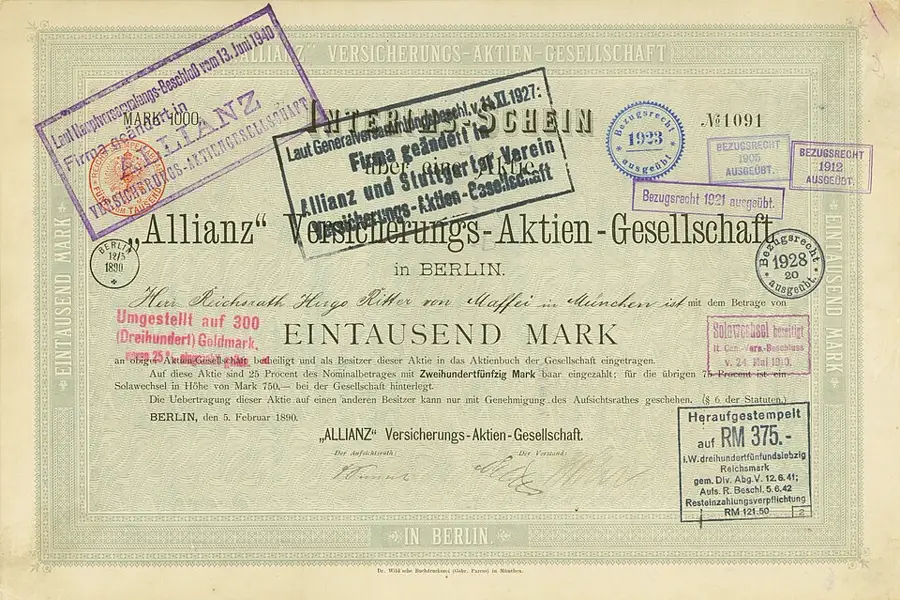
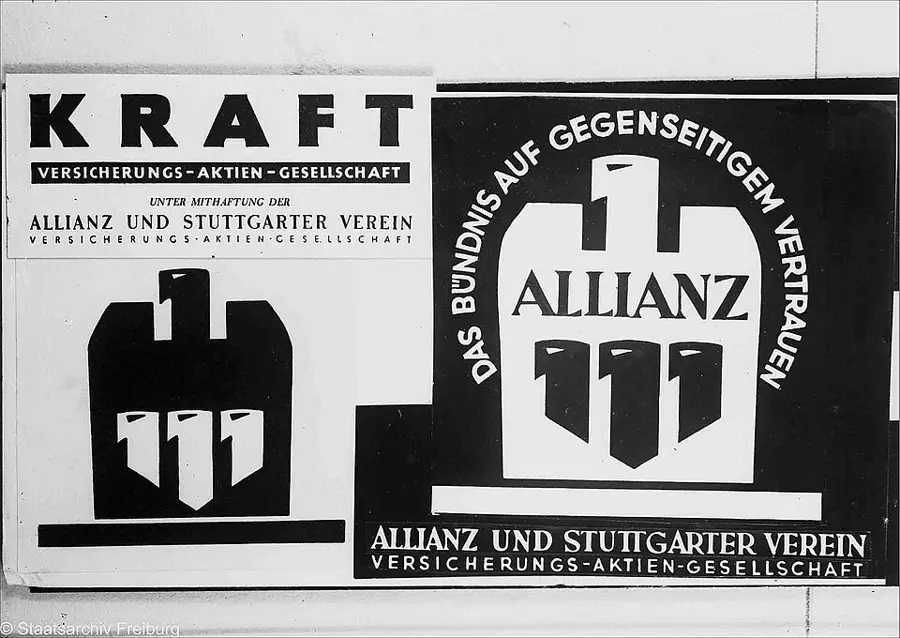
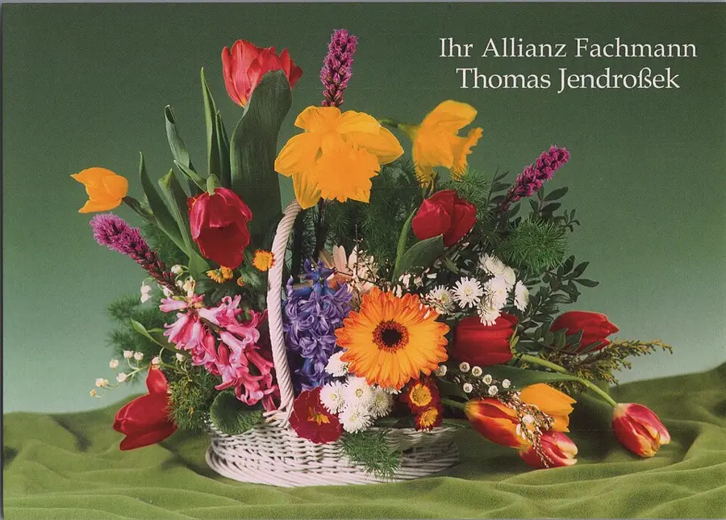

대표 로고대표 브랜드 마크
대표 로고대표 브랜드 마크알리안츠 Allianz SE
알리안츠(Allianz SE)는 독일 뮌헨에 본사를 둔 다국적 금융 서비스 기업이다. 핵심 사업은 보험과 자산운용이며, 세계 최대 보험사이자 유럽 최대 금융 서비스 기업으로 소개된다.
최종 업데이트
알리안츠는 어떤 브랜드인가
알리안츠(Allianz SE)는 독일 뮌헨에 본사를 둔 다국적 금융 서비스 기업이다. 핵심 사업은 보험과 자산운용이며, 세계 최대 보험사이자 유럽 최대 금융 서비스 기업으로 소개된다.
알리안츠는 어떻게 시작되고 성장했나
Allianz AG는 1889년 뮌헨에서 설립되었고, 1890년 2월 5일 베를린에서 활동을 시작했다. 당시 Munich Reinsurance Company의 이사였던 Carl von Thieme와 Merck Finck & Co.
Bank의 공동 소유주였던 Wilhelm von Finck가 회사를 세웠다. 회사는 Allianz Versicherungs-Aktiengesellschaft라는 이름으로 베를린 상업등기부에 등록되었고, 창업 자본은 4 million 마르크였다.
첫 상품은 해상보험과 상해보험으로 처음에는 독일에서만 판매했으나, 1893년 런던에 첫 해외 지점을 열었다. 1900년에는 기업 보험 판매 면허를 처음 취득한 보험사가 되었다.
알리안츠의 브랜드 아이덴티티는 무엇인가
보험과 자산운용을 중심으로 한 뮌헨 기반 금융 그룹으로, 세계 최대 보험사이자 유럽 최대 금융 서비스 기업으로 꼽힌다. 1890년 활동을 시작했다.
알리안츠의 대표 제품과 서비스는 무엇인가
초기 상품은 해상보험과 상해보험이었다. 1905년 화재보험, 1911년 기계 고장 보험을 판매하기 시작했고, 1918년에는 Kraft Versicherungs-AG라는 합작회사를 통해 자동차보험도 제공했다.
기계 고장 보험은 1924년까지 세계에서 알리안츠만 판매했다. 1922년부터는 생명보험을 판매해 1920년대 말 유럽 최대 생명보험 제공자가 되었다.
현재 핵심 사업은 보험과 자산운용이며, 자산운용 부문은 PIMCO와 Allianz Global Investors로 구성된다.
알리안츠는 지금 어떤 상태인가
알리안츠는 현재 뮌헨에 본사를 두고 있으며, 세계 최대 보험사로 평가된다. 2023년 포브스 글로벌 2000에서 37위였고 유로 스톡스 50 지수의 구성 종목이다.
2021년 1분기 기준 자산운용 부문의 운용자산은 €2,432 billion이며, 이 중 제3자 자산이 €1,775 billion이다. 2008년 11월에는 Dresdner Bank를 Commerzbank에 매각했다.
알리안츠 로고는 어떻게 변해왔나
대표 로고대표 브랜드 마크사진으로 보는 알리안츠의 역사



자주 묻는 질문
알리안츠는 어느 나라 브랜드인가요?
알리안츠는 독일의 금융 브랜드입니다.
알리안츠는 언제 설립되었나요?
알리안츠는 1890년 설립되었습니다.
알리안츠의 브랜드 아이덴티티는 무엇인가요?
보험과 자산운용을 중심으로 한 뮌헨 기반 금융 그룹으로, 세계 최대 보험사이자 유럽 최대 금융 서비스 기업으로 꼽힌다.
알리안츠의 대표 제품은 무엇인가요?
초기 상품은 해상보험과 상해보험이었다.
알리안츠는 현재 어떤 상태인가요?
알리안츠는 현재 뮌헨에 본사를 두고 있으며, 세계 최대 보험사로 평가된다.
알리안츠의 창업자는 누구인가요?
알리안츠의 창업자는 Carl von Thieme, Wilhelm von Finck입니다(위키데이터 기준).
알리안츠의 본사는 어디에 있나요?
알리안츠의 본사는 뮌헨에 있습니다(위키데이터 기준).
출처와 검증
알리안츠 관련 참고: 공식 웹사이트 · 위키데이터 Q487292 · 한국어 위키백과 · 영어 위키백과. 브랜드명은 한글과 원어를 함께 표기하되 데이터에 없는 표기는 만들지 않습니다. 기원 국가·설립연도는 검수된 정의문에서 확인된 값을 우선하고, 없을 때만 공식 웹사이트 URL이 일치하는 위키데이터 개체의 값을 씁니다. 탄생일의 월·일은 위키데이터, 위키백과 정보상자, 본문 가운데 같은 연월로 확인되는 값만 싣고, 출처끼리 다르면 싣지 않습니다. 위키데이터 값은 2026-11-11 기준입니다.